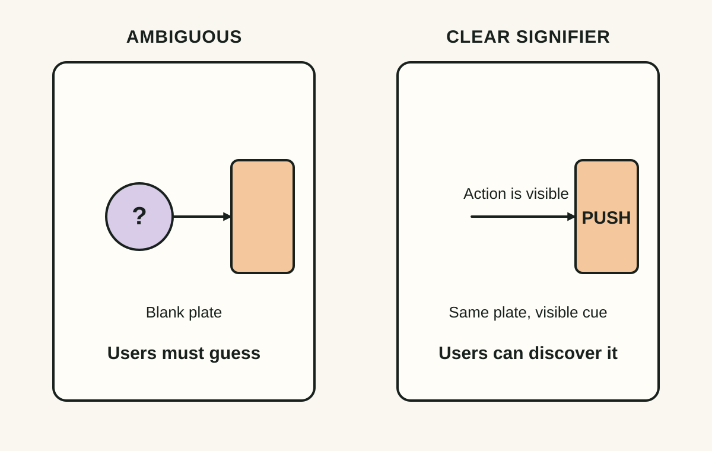
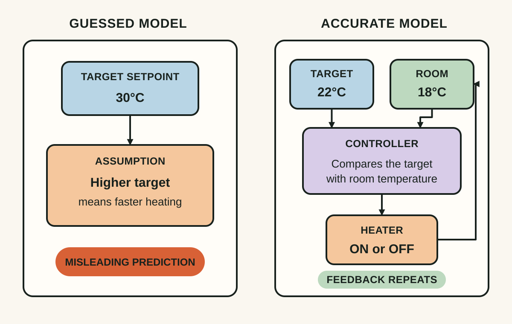
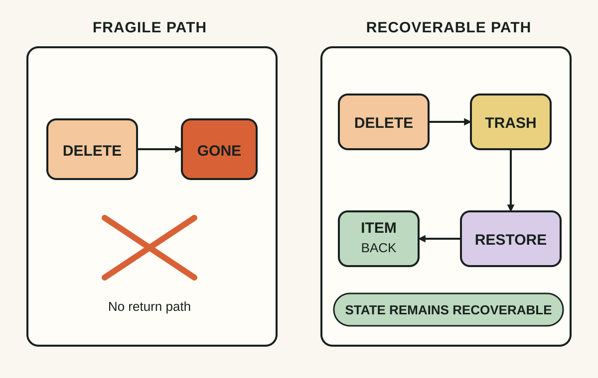

Daily lesson ·
The Design of Everyday Things
When users repeatedly make the same mistake, the interface may be teaching the wrong action.
Idea 1
Make the right action visible #
The idea
Norman distinguishes affordances, which are relationships that make actions possible, from signifiers: perceptible clues showing where and how to act. Signifiers became more prominent in the revised edition because digital interfaces can support many invisible actions.
A control can technically afford an action while remaining functionally undiscoverable. Repeated requests for help with an ordinary task may be evidence of weak signalling rather than weak users.

Why it matters
A user should not need to reverse-engineer the designer's intention. Clear signifiers reduce hesitation, support learning and prevent repeated support questions.
Apply it today
Pick one screen and identify its most important next action. Imagine a first-time user with no documentation: what visible cue tells them what to do?
If the answer is mostly 'they should know', strengthen one cue and define an observable measure such as completion rate, hesitation time or support contacts.
Caveat or failure mode
More signalling is not automatically better. Labels, icons, badges and hints can compete until none has priority. Aim for enough information for the intended action to be inferred correctly.
Idea 2
Give users a correct conceptual model #
The idea
People build simplified explanations of how systems work. Good design helps them form a useful conceptual model so they can predict what actions will do and interpret system state.
Norman's thermostat example shows the cost of a wrong model: with a simple on/off thermostat, setting a much higher target does not make heating faster; it only changes when heating stops. A user can act rationally from the model the interface appears to teach and still be wrong.

Why it matters
Once users understand how a system behaves, they can reason through unfamiliar cases. A wrong model produces systematic errors that training alone may not remove.
Apply it today
Choose one confusing workflow and write two sentences: 'Users seem to believe…' and 'The system actually…'.
If they differ, find the status name, sequence, wording or feedback teaching the wrong model.
Caveat or failure mode
Conceptual models are simplifications. Exposing internal architecture can make the product harder to understand; the model only needs enough fidelity to predict relevant behaviour.
Idea 3
Design for error, not perfect behaviour #
The idea
Norman rejects the habit of treating every error as careless behaviour. A slip is the wrong action while pursuing the right goal; a mistake begins with the wrong goal, rule or plan. The two need different defences.
Constraints, interlocks, undo, confirmation, sensibility checks, safe defaults and resilience are different tools. The important design question is not only how to prevent the wrong action, but how much damage occurs after it.

Why it matters
Undo, previews, reversible states and constraints can turn a serious incident into a small correction, even when a competent user acts under pressure.
Apply it today
Find one destructive, financial or hard-to-reverse action. Classify its current defence as prevented, detectable, recoverable or irreversible.
If it is mostly irreversible, identify the smallest change that makes the state recoverable.
Caveat or failure mode
Confirmation dialogs are not a universal solution. If routine actions always ask 'Are you sure?', users learn to click through. Reserve strong friction for unusual or consequential actions.
Knowledge check · 6 questions
Learning check
Answer all 6, then check your answers. Your first result stays in this browser, and each explanation appears after you check. A 3-question review can appear on the homepage from tomorrow.
6 questions not yet answered.
Today's experiment · 7 minutes
Run a usability archaeology test
- Open one screen without touching anything.
- Write the three actions a new user would probably think are available.
- Compare them with the three actions the product actually wants them to take.
- Circle the largest mismatch and classify it as a weak signifier, wrong conceptual model or poor error design.
Observable result: You finish with one classified design problem and one observable behaviour to measure after changing it.
Retrieval practice
Spaced recall
- From Team Topologies: if a capable team keeps losing time to context switching, how would you distinguish excessive cognitive load from a prioritisation problem?
Verification
Source notes
These links support the attributed claims and edition details; applications and extensions are labelled in the lesson.
One-sentence takeaway